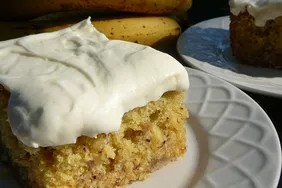

Banana Cake

Description
Put your excess bananas to good use with this homemade banana cake recipe,
topped with a decadent cream cheese frosting.
Ingredients
For the Cake:
- Bananas
- Lemon juice
- All-purpose flour
- Baking soda
- Salt
- White sugar
- Butter
- Eggs
- Vanilla Extract
- Buttermilk
For the frosting:
- Butter
- Cream cheese
- Vanilla extract
- Confectioner's Sugar
Steps
- Mix the mashed bananas and lemon juice.
- Mix the dry ingredients in one bowl and beat the sugar and butter in another.
- Beat in the eggs and the vanilla, then combine the wet and dry ingredients and stir in the banana mixture.
- Pour the batter into a prepared pan and bake in the preheat oven until a toothpick comes out clean.
- After baking, remove cake from pan and place directly into the freezer for 45 minutes.
- Remove from freeze and frost the cake with the frosting.